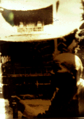

かぐや姫御殿/京都府西京区
秋である。京都である。嵐山である。物凄い人の数である。
そんな人混みに堪えられなくなったアナタ、静かな隣の松尾に逃げるべし。そこには摩訶不思議な建物がアナタのバロック心を満たさんと待ち構えている。
それは世界文化遺産に指定された苔寺、の門前、苔寺バス停のすぐ目の前にある怪し気な門が目印の「かぐや姫御殿」だ。
この御殿、ある人物が27年の歳月を費やしてたったひとりで作り上げた、いわゆるオヤジひとりでつくっちゃった系の小さな理想郷なのである。しかし侮るなかれ。これをつくった人物はただの素人ではない。竹名人とうたわれた竹工職人なのである（ただし自称）。
その名人の名は長野清助。タケノコだけじゃなくて建築材としても有名な竹の産地であるこの地に別荘を建設せしめんと始めたのが戦後すぐの頃。
「なんやワレ、寺やのうて別荘かいな」という声も聞こえて来そうだが、慌てないで欲しい。実はここ竹名人の別荘としてつくられてはいるのだが、単なる別荘ではない。建物そのものが金閣寺のフェイクなのである。
しかもオール竹製の。
そしてその金閣寺の中に祀られているのである。何がでしょう？ハイ、そうです。かぐや姫が祀られているんですねえ。
ここ松尾一帯はもともと竹の産地であると同時にかぐや姫伝説発祥の地でもあるのだ。
つまりこの竹名人、昭和25年に炎上した金閣寺へのオマージュとして自身の技術と魂を120パーセント注入した竹製金閣寺をつくり、そして建物を建てた地へのオマージュとしてその中にかぐや姫像を祀ったのである。
この「竹名人の理想郷」は大きく分けて3つの建物で構成されている。ひとつは表通りに面した門。そして門を潜った左手にある母屋と思しき建物。そして正面、池の向こうに建つのが件の竹製金閣寺である。敷地は竹林や小さな庭を含めても50坪程か。しかしその濃ゆ〜いエキスが充満している様はさながら竹ずくしのミクロコスモスである。
門から始まり、母屋、金閣寺の順に建設されていったとの事。成る程、門のほうは怪し気ではあるが銘木などを多様しており、比較的マトモな印象を受ける（勿論金閣寺に比べて、という意味でだよ）。そして母屋になると竹の使用量が増えてきて最奥の金閣寺になると建材のほとんどが竹、という案配になってくる。見た限りで木材を使用しているのは屋根のうえの鳳凰が流木で作られている位で柱や壁、天井や手摺、窓枠などがすべて竹ずくし。そして建物の竹の使用量に比例して竹名人の魂注入係数も高くなってくる。それにつられてマッド係数も上昇していくのだが。
それにしても竹名人。27年かけただけあって技術的に見せ場が多い。竹をチップ状にカットして竹のモザイクで壁を仕上げたり竹の曲線を上手く生かして火頭窓をつくったり、また金閣寺の内部の天井などは放射状に竹を張り付けた、所謂「傘天井」だったりする。この辺、完全に竹製バロック。
そんな金閣寺を完成させたその年、竹名人長野翁は他界してしまう。住むためにつくったのか、つくるためにつくたのか、その辺ははっきりしないが、今日こうしてこの「い〜仕事してますねえ」具合をみるとやっぱり本意は後者のほうにあったとしか思えない。と言う事は長野翁、見事本懐遂げたり、ということなのであろう。あっぱれ、あっぱれ。
ちなみに現在はこのかぐや姫御殿、観光用に一般開放されており、亡き長野翁の偉業を讃えつつ、加持祈祷などもキッチリとやっております。

1998.11
珍寺大道場 HOME